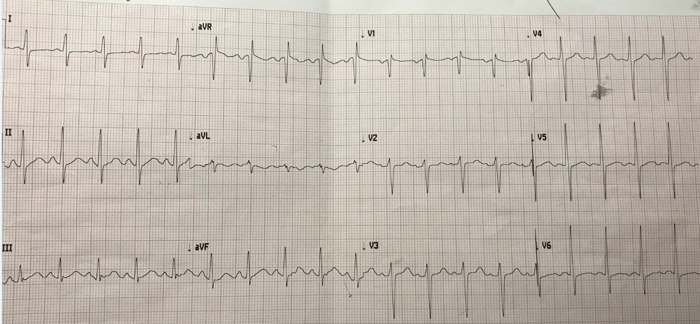
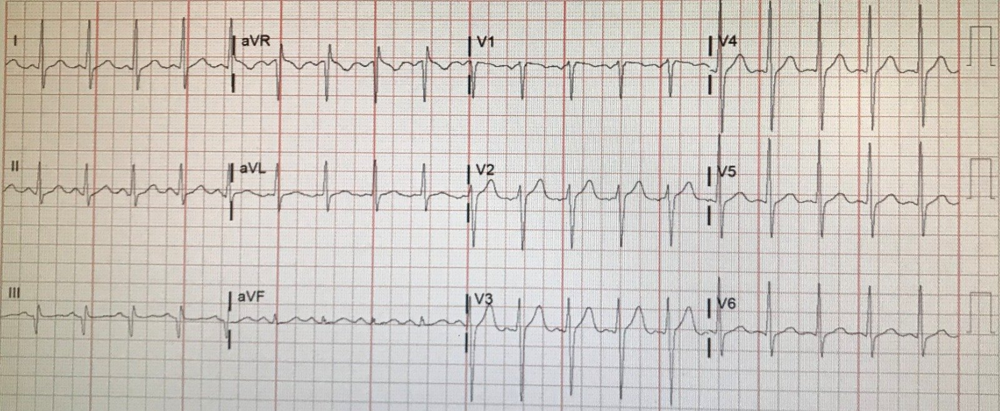
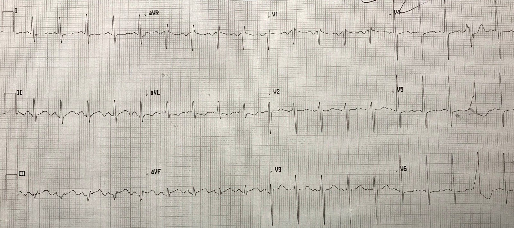
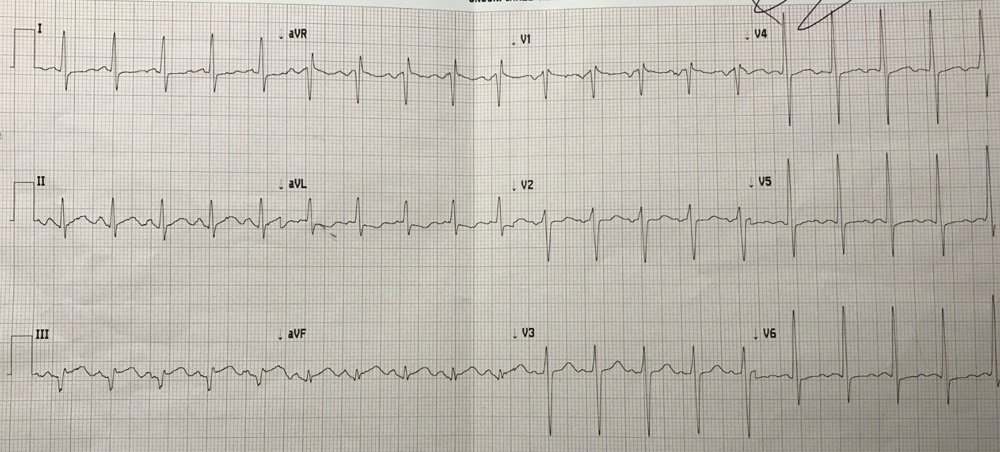
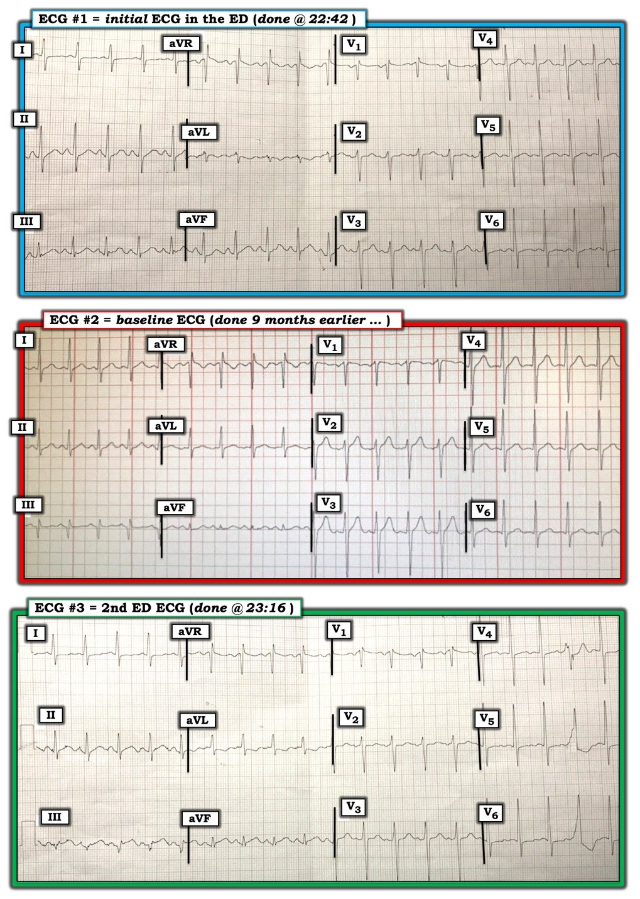

08/11/2019 — Nam 41 tuổi đau ngực với điện tâm đồ lúc phân loại không chẩn đoán được. Dùng thuốc tiêu sợi huyết trước khi chuyển viện để PCI
Bản dịch tiếng Việt của bài "A 41 year old with chest pain and a Nondiagnostic Triage ECG. Thrombolytics prior to transfer for PCI." – Dr. Smith’s ECG Blog. Giữ nguyên toàn bộ 7 hình ảnh của bản gốc.
Bài này do Tom Fiero ở Merced, CA, một độc giả nhiệt thành của blog, gửi đến.
“Một nam giới 41 tuổi đến viện vì đau ngực dữ dội đột ngột, khởi phát 1 giờ trước khi đến.”
“Đây là điện tâm đồ đầu tiên tại khoa cấp cứu (ED) lúc 2242:”


“Đồng nghiệp của tôi được cho xem điện tâm đồ và anh ấy không thấy có gì đáng lo.”
“30 phút sau, tôi nhận bệnh nhân, xem điện tâm đồ này và tôi thấy lo ngại.”
“Tôi lo về ST chênh xuống nhẹ ở chuyển đạo aVL, và về hình thái của aVL.”
“Tôi tìm điện tâm đồ cũ và thấy một bản ghi từ 9 tháng trước:”


Tuy nhiên, phần lớn sự khác biệt có thể hoàn toàn là do trục QRS.
1. Trục QRS = khoảng 45 độ ở điện tâm đồ cũ, nhưng 90 độ (trục đứng) ở điện tâm đồ lúc nhập viện.
2. Trục sóng T là 30 độ ở điện tâm đồ cũ và 90 độ ở điện tâm đồ lúc nhập viện. Điện tâm đồ cũ: trục QRST = ~15 độ Điện tâm đồ lúc nhập viện: trục QRST = ~ 0 độ Vì vậy thực sự không có thay đổi đáng kể của trục QRST (đại lượng phản ánh sóng T đảo ngược), nhưng có thay đổi ở cả trục QRS lẫn trục sóng T, và tôi thực sự không biết ý nghĩa của điều này. Dù vậy, tôi đồng ý với độc giả rằng aVL trông đáng ngờ, nhưng chưa đủ để chẩn đoán.
Dr. Fiero kể tiếp:
“Lúc này, bệnh nhân còn vã mồ hôi. Tôi cho aspirin và heparin liều bolus. Huyết áp 220/110. Tôi cho nitroglycerin (NTG) ngậm dưới lưỡi. Lẽ ra tôi sẽ cho truyền NTG liên tục, nhưng việc đó làm chậm việc chuyển viện khẩn bằng đường bộ vì cần điều dưỡng hồi sức đi kèm. Vì vậy tôi cho labetalol.”
Sau đó tôi cho ghi một điện tâm đồ khác lúc 2316


“Tôi cho TNK-tPA (Tenecteplase), vì thời gian vận chuyển quá dài để chỉ trông chờ vào can thiệp mạch vành qua da (PCI).”
Bình luận của Smith:
1. Nếu thời gian từ lần tiếp xúc y tế đầu tiên đến bóng lớn hơn 120 phút, điều xảy ra ở hơn 50% các ca chuyển viện, thì hãy dùng thuốc tiêu sợi huyết và chuyển viện để PCI ngay khi đến nơi.
Nói cách khác:
2. Nếu thời gian từ cửa (tại bệnh viện chuyển đi) đến bóng (tại trung tâm tiếp nhận) lớn hơn 90 phút, thì hãy dùng thuốc tiêu sợi huyết. Khi thời gian vận chuyển lớn hơn 30 phút, thời gian từ cửa đến bóng lớn hơn 90 phút ở hơn 50% số ca.
Fiero kể tiếp
“Bệnh nhân vẫn còn đau ngực.”
“Thời gian từ cửa đến kim lớn hơn 90 phút, vì thế dùng TNK.”
“Và tôi ghi điện tâm đồ thứ 3:”
Lúc 2322


“Lúc này, bệnh nhân trông khá hơn và cảm thấy dễ chịu hơn. Chúng tôi đưa anh lên xe và chuyển đi.”
“Trước khi đi, anh thừa nhận đã lạm dụng amphetamine khoảng 10 giờ trước khi đến viện.”
“Tôi đã nghĩ có lẽ mình phản ứng thái quá với điện tâm đồ đầu tiên.”
“Sau đó tôi có được điện tâm đồ cũ, anh ấy trông có vẻ bệnh nặng, và tôi nhận ra mình không hề phản ứng thái quá.”
RCA của bệnh nhân đã được tái tưới máu và bệnh nhân có kết cục tốt.
Bình luận của Smith
Thêm vài điểm về dùng thuốc tiêu sợi huyết trước khi chuyển viện:
1. Clopidogrel là lựa chọn tốt và đã được chứng minh có lợi khi dùng thuốc tiêu sợi huyết cho STEMI. Liều trong tình huống này là 300 mg.
—–Cả Prasugrel lẫn Ticagrelor đều chưa được nghiên cứu, clopidogrel liều 600 mg cũng vậy.
2. ASSENT-3 cho thấy thuốc chống huyết khối tốt nhất cho bệnh nhân STEMI đang được dùng thuốc tiêu sợi huyết là enoxaparin.
Đây là phác đồ liều
(mọi phác đồ đều phải được thống nhất giữa cơ sở chuyển đi và cơ sở tiếp nhận):
STEMI được dùng thuốc tiêu sợi huyết, kể cả khi sau đó chuyển viện để PCI ngay:
Enoxaparin là lựa chọn tối ưu:
Nếu dưới 75 tuổi: 30 mg tiêm tĩnh mạch liều bolus, 15 phút sau tiêm dưới da 1 mg/kg (tối đa 100 mg)
Nếu trên 75 tuổi: Không bolus, tiêm dưới da 0,75 mg/kg (tối đa 75 mg)
Chuyển viện bệnh nhân STEMI vàsử dụng thuốc tiêu sợi huyết
Dr Meyers và tôi đã viết chương ACS trong “CorePendium” của EmRap
(Compendium of Emergency Medicine, một sách giáo khoa trực tuyến). Dưới đây là phần về Chuyển viện
bệnh nhân STEMI do tôi viết.
Chuyển viện chỉ để PCI so với dùng thuốc tiêu sợi huyếttrước khi chuyển viện cho STEMI
- Nếu
thời gian chậm trễ từ lần tiếp xúc y tế đầu tiên đến PCI sẽ lớn hơn 120 phút
(và hầu như luôn như vậy) - Thì
dùng thuốc tiêu sợi huyết trước - Nếu
thời gian chậm trễ dưới 120 phút, thì chuyển viện để PCI mà không
dùng thuốc tiêu sợi huyết
PCI tạo thuận lợi (facilitated PCI: thuốc tiêu sợi huyết) kèmđiều trị chống huyết khối hỗ trợ đầy đủ và ức chế P2Y12, khi bệnh nhânkhông thể được PCI trong vòng một giờ cho STEMI
- Nghiên cứu
STREAM (Armstrong và cs.
2013). Bệnh nhân đến bệnh viện không có PCI.
Tất cả đều được chuyển viện. - Phân ngẫu nhiên vào:
- 1) TNK-tPA trước khi chuyển viện
- Tenecteplase liều bolus
chuẩn (½ liều ở bệnh nhân trên 75 tuổi) kèm clopidogrel
300 mg và enoxaparin (30 mg tĩnh mạch + 1 mg/kg tiêm dưới da) trước khi vận chuyển
đến bệnh viện có khả năng PCI. - 2) Không dùng TNK-tPA trước khi
chuyển viện - Nhóm chỉ PCI:
- Bệnh nhân trong nhóm chỉ
PCI được điều trị rất nhanh, với 100 phút từ khởi phát triệu chứng
đến khi đặt sheath (Armstrong và cs. 2013) - Nhóm dùng thuốc tiêu sợi huyết trước PCI:
- Chụp mạch vành
cấp cứu được thực hiện nếu tiêu sợi huyết thất bại (được đánh giá bằng
hết đau và hồi phục ST chênh lên trên điện tâm đồ). - Do đó, nó tương tự như
PCI cứu vãn có kế hoạch (xem PCI cứu vãn bên dưới) - Nếu không, chụp mạch được
thực hiện 6 đến 24 giờ sau phân ngẫu nhiên. - Tiêu chí đánh giá chính là tổng hợp tử vong, sốc,
suy tim sung huyết hoặc tái nhồi máu trong vòng 30 ngày. - Kết quả:
- 36% bệnh nhân dùng thuốc tiêu sợi huyết
cần PCI khẩn. Thời gian trung bình từ phân ngẫu nhiên đến chụp mạch
ở những bệnh nhân này là 2,2 giờ, so với 17 giờ ở 64% còn lại. - Tiêu chí đánh giá chính
xảy ra ở 116 trên 939 bệnh nhân (12,4%) trong nhóm tiêu sợi huyết kèm
cứu vãn, và ở 135 trên 943 bệnh nhân (14,3%) trong nhóm PCI tiên phát
(p=0,21 - Xuất huyết nội sọ là
1,0% với TNK-tPA so với 0,2%. - Kết luận: Chuyển viện để PCI mà không dùng
thuốc tiêu sợi huyết là tốt nhất nếu PCI tại cơ sở tiếp nhận có thể thực hiện trong vòng dưới
120 phút kể từ lần tiếp xúc y tế đầu tiên, hoặc dưới 90 phút kể từ
khi chẩn đoán STEMI tại khoa cấp cứu đầu tiên.
Thuốc tiêu sợi huyết trước khi chuyển đếncơ sở có khả năng PCI, sau đó PCI cứu vãn nếu không tái tưới máu, cho STEMI
- TRANSFER AMI (Cantor
và cs. 2009). - STEMI nguy cơ
cao: huyết áp dưới 100, nhịp tim trên 100, Killip độ II, III, ST
chênh xuống ít nhất 2 mm ở các chuyển đạo trước tim, ST chênh lên ở các chuyển đạo
trước tim phải (nhồi máu thất phải - Tất cả
bệnh nhân đều được dùng TNK-tPA. - 80-90%
được dùng clopidogrel 300 mg (75 mg nếu trên 75 tuổi). - Enoxaparin
(không dùng nếu trên 75 tuổi) hoặc heparin không phân đoạn (UFH) (50-50). Liều không được nêu rõ,
có lẽ là liều chuẩn. - Bệnh nhân được
phân ngẫu nhiên vào: - 1) Điều trị chuẩn:
- Chỉ chuyển viện nếu ST vẫn chênh lên
dai dẳng (ST hồi phục dưới 50%) - Không chuyển viện nếu có tái tưới máu
(ST hồi phục) - 2) Chuyển viện để PCI ngay bất kể có
tái tưới máu hay không. - Kết quả: Nhóm
can thiệp được PCI với trung vị 2,8 giờ sau phân ngẫu nhiên - Kết cục bất lợi nặng trong 30 ngày 17,2% so với
11,0% (NNT = 16) - Kết luận: Mọi STEMI nguy cơ cao nên được chuyển viện ngay sau khi
dùng thuốc tiêu sợi huyết
Thuốc tiêu sợi huyết trước khi chuyển đếncơ sở có khả năng PCI, sau đó PCI thường quy bất kể có tái tưới máu hay không, choSTEMI
- CARESS-in-AMI (Di Mario và cs.
2008) - Bệnh nhân: STEMI nguy cơ cao, có ít nhất một
đặc điểm nguy cơ cao, được điều trị ban đầu tại bệnh viện không có PCI - ST chênh lên lan rộng, LBBB mới, tiền sử nhồi máu
cơ tim, Killip độ lớn hơn hoặc bằng 2, LVEF dưới 35% - ½ liều reteplase, abciximab, heparin,
aspirin; chỉ 1 trên 6 bệnh nhân được dùng clopidogrel từ tuyến trước, nhưng điều này có lẽ
không quá quan trọng vì họ đã được kháng tiểu cầu kép (DAPT) bằng abciximab. - Phân ngẫu nhiên vào:
- Chuyển viện ngay để PCI hoặc
- Điều trị chuẩn: Chuyển viện để PCI cứu vãn
chỉ khi cần - PCI ở 85,6% nhóm chuyển ngay; PCI cứu vãn
ở 30,3% nhóm điều trị chuẩn - Thời gian trung vị từ thuốc tiêu sợi huyết đến chuyển viện =
110 phút ở nhóm chuyển ngay so với 180 phút ở nhóm cứu vãn. - Tiêu chí tổng hợp gồm tử vong do mọi nguyên nhân,
tái nhồi máu và thiếu máu cục bộ cơ tim kháng trị trong vòng 30 ngày (4,4%
so với 10,7%, p = 0,004) ở nhóm PCI ngay so với nhóm điều trị
chuẩn/PCI cứu vãn (NNT=17). - Không có khác biệt đáng kể về chảy máu nặng
trong 30 ngày (3,4% so với 2,3%, P0,47) hoặc đột quỵ (0,7% so với 1,3%,
P0,50). - Phân tích gộp
gồm cả bệnh nhân nguy cơ cao và không nguy cơ cao - Kết luận rằng mọi bệnh nhân nên được
chuyển viện để PCI thường quy sớm sau thuốc tiêu sợi huyết (Borgia và cs. 2010). - Sớm được định nghĩa là dưới 24 giờ.
Tuy nhiên, hình dưới đây từ một bài xã luận (Granger 2011) trình bày 7 thử nghiệm
trong phân tích gộp cho thấy thời gian đến PCI thường rất ngắn. - Kết luận:
- Mọi bệnh nhân nguy cơ cao được dùng
thuốc tiêu sợi huyết trước khi chuyển viện nên được chụp mạch vành ngay +/- PCI
tại cơ sở tiếp nhận, bất kể tình trạng tái tưới máu (nói cách
khác, không chỉ những bệnh nhân cần PCI cứu vãn). - Ở những bệnh nhân không nguy cơ cao và không cần
PCI cứu vãn, cũng cân nhắc chụp mạch ngay +/- PCI sau khi trì hoãn 2-3
giờ (O’Gara
và cs. 2013).
Nửa liều thuốc tiêu sợi huyết trước khichuyển đến cơ sở có khả năng PCI cho STEMI
- Nửa liều thuốc tiêu sợi huyết trước khi chuyển viện có vẻ là một
lựa chọn hấp dẫn, không làm tăng chảy máu nặng. (Larson và cs. 2012) - Không phải thử nghiệm ngẫu nhiên
- Trung tâm tiếp nhận STEMI, với một số bệnh viện
chuyển đến ở xa hơn 60 dặm - So sánh với bệnh nhân STEMI đến
thẳng bệnh viện tiếp nhận - Tất cả đều được dùng aspirin,
clopidogrel và heparin không phân đoạn (UFH) - Những bệnh nhân đến các
bệnh viện cách ≥60 dặm còn được dùng nửa liều thuốc tiêu sợi huyết, kèm
chuyển viện để PCI ngay. - Tổng cộng 2634 bệnh nhân STEMI
liên tiếp từ mọi nguồn - 660 bệnh nhân được chuyển từ các bệnh viện
ở xa, dùng nửa liều tenecteplase (TNK-tPA) - 600 bệnh nhân đến
thẳng trung tâm PCI. - Thời gian từ cửa đến bóng của
nhóm đến thẳng so với nhóm chuyển viện: (trung bình +/- CI): 62 (44-83) so với 122 (100-147) - Không có khác biệt đáng kể
về tử vong trong 30 ngày (5,5 so với 5,6%; P= 0,94), đột quỵ (1,1 so với 1,3%; P=
0,66), chảy máu nặng (1,5 so với 1,8%; P= 0,65), hoặc
tái nhồi máu/thiếu máu cục bộ (1,2 so với 2,5%; P= 0,088) ở bệnh nhân dùng
TNK so với những bệnh nhân đến thẳng trung tâm PCI, mặc dù
thời gian từ cửa đến bóng dài hơn đáng kể
Tóm tắt: Các chiến lược tái tưới máuphối hợp (thuốc tiêu sợi huyết + PCI)
- Trước hết,
cần nhận ra rằng chỉ một tỷ lệ bệnh nhân STEMI
không được dùng thuốc tiêu sợi huyết thực sự được chuyển viện để PCI
kịp thời, và do đó cần cân nhắc mạnh mẽ việc dùng thuốc tiêu sợi huyết
trước khi chuyển viện. - Khi thời gian lái xe trên 30 phút, chỉ 42%
bệnh nhân đạt thời gian từ cửa đầu tiên đến bóng dưới 120
phút. Thời gian khuyến cáo là từ lần tiếp xúc y tế đầu tiên đến bóng
dưới 120 phút (Vora
và cs. 2015). - Do đó,
theo ACC/AHA, chuyển viện ngay sau thuốc tiêu sợi huyết được
khuyến cáo: - Cho mọi trường hợp tái tưới máu thất bại (để PCI cứu vãn),
ST hồi phục ít nhất 70% - Cho mọi bệnh nhân nguy cơ cao
- Với mọi bệnh nhân khác, chuyển viện là
hợp lý - Ở những bệnh nhân này, PCI nên được trì hoãn
2-3 giờ sau thuốc tiêu sợi huyết (O’Gara
và cs. 2013)
Cuối cùng,
nửa liều thuốc tiêu sợi huyết trước khi chuyển viện có vẻ là một lựa chọn hấp dẫn,
không làm tăng chảy máu nặng. (Larson và cs. 2012)

===================================
BÌNH LUẬN CỦA TÔI, bởi KEN GRAUER, MD (8/11/2019):
===================================
Một ca bệnh thú vị của Dr. Tom Fiero và Dr. Stephen Smith, trong đó tiêu đề bài viết đã nói lên tất cả = “Nam 41 tuổi bị đau ngực và Điện tâm đồ lúc phân loại (triage) không chẩn đoán được”. Các bình luận của tôi tập trung vào “Bài học rút ra” từ 3 bản ghi đầu tiên được trình bày.
- Cho rõ ràng — tôi đã đặt 3 bản ghi đầu tiên này cạnh nhau trong Hình 1.
- Xin LƯU Ý: Các bình luận của tôi dưới đây khá tinh tế và rõ ràng là ở mức nâng cao. Bạn có sẵn sàng đón nhận thử thách không?


Điện tâm đồ #1: Như thường lệ — Bệnh sử là MẤU CHỐT.
- Bệnh nhân là nam giới 41 tuổi đến viện vì đau ngực dữ dội đột ngột khởi phát 1 giờ trước khi đến bệnh viện. Với biểu hiện lâm sàng đáng lo ngại này — trách nhiệm chứng minh thuộc về CHÚNG TA, phải chứng minh rằng đây không phải là OMI đang diễn ra, chứ không phải ngược lại …
Mặc dù điện tâm đồ #1 không chẩn đoán được OMI cấp khi chỉ dựa vào riêng nó — đây không phải là một điện tâm đồ “bình thường”.
- Điểm MẤU CHỐT: Điện tâm đồ #1 không “âm tính” theo nghĩa là nó loại trừ được bất cứ điều gì. Nó chỉ đơn giản là không đủ để chẩn đoán OMI cấp khi đứng riêng một mình.
- Có nhịp nhanh xoang với tần số 115-120/phút. Như mọi khi với nhịp nhanh xoang — chúng ta cần tìm ra TẠI SAO?
- Tôi nghi ngờ rằng chuyển đạo V1 được đặt quá cao trên ngực vì: i) có một thành phần âm nổi bật của sóng P ở chuyển đạo V1; ii) có hình ảnh r’ ở chuyển đạo V1; và, iii) hình dạng tổng thể của chuyển đạo V1 trông giống với chuyển đạo aVR (BẤM VÀO ĐÂY — để tìm hiểu thêm về cách nhận biết khả năng đặt sai vị trí điện cực V1,V2).
- Ngoài ra, với điện tâm đồ #1 — Khoảng PR bình thường, và QRS hẹp. QTc có thể ở mức giới hạn — mặc dù khó biết nên đánh giá QTc thế nào khi tần số nhanh như vậy. Trục mặt phẳng trán bình thường (tức là khoảng +75 độ). Không có lớn buồng tim. Nếu chuyển đạo V1 không bị đặt sai vị trí — thì có hình ảnh blốc nhánh phải không hoàn toàn (incomplete RBBB) (tức là có r’ ở V1 kèm sóng s tận hẹp ở chuyển đạo I và V6). Về Thay đổi Q-R-S-T — không có sóng Q (ngoại trừ có lẽ ở chuyển đạo V1) — và tăng tiến sóng R cho thấy vùng chuyển tiếp hơi muộn (sóng R chưa cao hơn độ sâu của sóng S cho đến khoảng giữa chuyển đạo V4 và V5). Sóng S tồn tại kéo dài đến tận chuyển đạo V6.
Những dấu hiệu đáng chú ý nhất trên điện tâm đồ #1 là những dấu hiệu liên quan đến Thay đổi sóng ST-T. Cần diễn giải những thay đổi này trong bối cảnh bệnh nhân này đến viện vì đau ngực mới khởi phát và dữ dội, bắt đầu chỉ 1 giờ trước khi ghi bản ghi này:
- Có ST-T dẹt không đặc hiệu ở một số chuyển đạo (tức là ở các chuyển đạo I, V2, V5 và V6). Sóng T có biên độ tương đối giảm ở chuyển đạo V3 và V4.
- Có sóng T đảo ngược ở chuyển đạo aVL trên điện tâm đồ #1. Mặc dù sóng T ở chuyển đạo aVL bình thường có thể đảo ngược khi phức bộ QRS chủ yếu âm ở chuyển đạo này — kích thước của sóng T này (so với kích thước rất nhỏ của QRS ở aVL) lớn không tương xứng và, sóng T âm ở aVL này trông đầy đặn hơn mức đáng có. Đây là một thay đổi tinh tế! Dù vậy, với bệnh sử đáng lo ngại — không nên xem nhẹ nó!
- LƯU Ý: Mặc dù không có ST chênh lên ở các chuyển đạo thành dưới — BẠN có để ý rằng hình thái sóng ST-T thay đổi gần như từ nhát này sang nhát khác ở mỗi chuyển đạo thành dưới trên điện tâm đồ #1? Một vài phức bộ ở các chuyển đạo thành dưới có biểu hiện ST thẳng đuỗn — điều này có thể là dấu hiệu sớm của OMI cấp nếu sóng T đảo ngược ở chuyển đạo aVL phản ánh một thay đổi “soi gương”. NHƯNG — vì hình thái sóng ST-T thay đổi từ nhát này sang nhát khác ở các chuyển đạo thành dưới, khó biết được sóng ST-T nào phản ánh điều thực sự đang xảy ra … (Cần ghi lại bản ghi ban đầu tại khoa cấp cứu này ngay sau đó).
ĐIỀU CỐT LÕI – Diễn giải điện tâm đồ #1: Mặc dù điện tâm đồ #1 không chẩn đoán được OMI cấp — đây không phải là một bản ghi bình thường. Tự nó không loại trừ được điều gì. NHƯNG:
- Cần thêm thông tin trước khi có thể đưa ra bất kỳ kết luận nào. Điều này bao gồm ghi lại điện tâm đồ ngay sau đó (lý tưởng là trong vòng vài phút) — tìm các bản ghi cũ của bệnh nhân này — siêu âm tim khẩn tại giường (tìm rối loạn vận động thành) — troponin liên tiếp — và, tiếp tục theo dõi sát bệnh nhân cho đến khi có thể chắc chắn hơn về chẩn đoán.
CÂU HỎI: Đã tìm thấy một bản ghi nền (ghi 9 tháng trước đó) ( = điện tâm đồ #2). Bạn thấy những khác biệt nào giữa điện tâm đồ #1 và điện tâm đồ #2? Việc tìm thấy điện tâm đồ cũ này có làm thay đổi đánh giá của bạn về những gì bạn thấy trên điện tâm đồ #1 không?
- GỢI Ý: Hãy nhớ so sánh từng chuyển đạo giữa 2 bản ghi này trong Hình 1.
TRẢ LỜI:
- Điện tâm đồ #2 — một lần nữa cho thấy nhịp nhanh xoang với tần số tương tự! Điều này lại đặt ra câu hỏi TẠI SAO có nhịp nhanh xoang? LƯU Ý: Điều này có liên quan đến ca bệnh này — vì phần lớn giá trị của một bản ghi để so sánh có thể bị mất NẾU bệnh nhân đã đến viện trong hoàn cảnh tương tự (tức là đau ngực mới khởi phát) vào 9 tháng trước, khi điện tâm đồ cũ ( = điện tâm đồ #2) được ghi.
- Như Dr. Smith đã nêu — không có sóng T đảo ngược ở chuyển đạo aVL trên điện tâm đồ #2 — NHƯNG — trục mặt phẳng trán khác hẳn! Tức là, phức bộ QRS ở cả chuyển đạo I và aVL trên điện tâm đồ #2 giờ đây rõ ràng dương. Do đó, mặc dù kích thước và hình dạng tương đối của sóng T đảo ngược trên điện tâm đồ #1 vẫn nên làm nghi ngờ một thay đổi cấp tính — sự dịch chuyển trục mặt phẳng trán giữa 2 bản ghi không cho phép đưa ra bất kỳ kết luận chắc chắn nào.
- Có một sóng Q rộng và sâu ở chuyển đạo III trên bản ghi nền ( = điện tâm đồ #2). Sóng này không thấy trên điện tâm đồ #1. Ý nghĩa của dấu hiệu này chưa chắc chắn.
- Đã có một thay đổi về hình thái sóng ST-T giữa 2 bản ghi ở nhiều chuyển đạo! Tức là, sóng ST-T dương và có hình dạng bình thường ở các chuyển đạo I, V2, V3, V4 và V5 trên bản ghi nền ( = điện tâm đồ #2). Và, mặc dù sóng T nhỏ hơn mức đáng có ở chuyển đạo aVL và V6 trên điện tâm đồ #2 — sóng ST-T ở các chuyển đạo này rõ ràng trông bất thường hơn trên điện tâm đồ #1.
ĐIỀU CỐT LÕI – Đánh giá so sánh: Cả hai bản ghi đều cho thấy nhịp nhanh xoang với tần số tương tự. NHƯNG — ít nhất 7 chuyển đạo cho thấy gia tăng các thay đổi sóng ST–T không đặc hiệu trên bản ghi mới ( = điện tâm đồ #1).
- Một lần nữa — Cần thêm thông tin trước khi có thể đưa ra bất kỳ kết luận nào. Tuy vậy, với bệnh sử đáng lo ngại và, tình trạng xấu đi của bệnh nhân (tức là như Dr. Fiero đã nêu ở trên, bệnh nhân lúc này vã mồ hôi) — dù điện tâm đồ #1 vẫn không chẩn đoán được — cần duy trì mức độ nghi ngờ cao!
Một điện tâm đồ thứ 2 tại khoa cấp cứu ( = điện tâm đồ #3 trong Hình 1) được ghi lúc 23:16 ( = 34 phút sau điện tâm đồ #1). Dù giờ đây rõ ràng là điện tâm đồ #3 xác nhận chẩn đoán OMI cấp — tôi nghĩ sẽ hữu ích khi: i) mô tả những thay đổi ở từng chuyển đạo đã xảy ra trong 34 phút giữa điện tâm đồ #1 và điện tâm đồ #3 (Hình 1); và, ii) xem xét lại điện tâm đồ nền ( = điện tâm đồ #2) nhằm giờ đây xác định chắc chắn hơn những thay đổi nào trên điện tâm đồ #1 là dấu hiệu của biến cố cấp tính đang tiến triển này.
- Điện tâm đồ #3 — một lần nữa cho thấy nhịp nhanh xoang với tần số tương tự. Có một PVC.
- Giờ đây có ST chênh lên tối cấp ở chuyển đạo III và aVF (và có lẽ cả ở chuyển đạo II ) trên điện tâm đồ #3.
- LƯU Ý: Trục mặt phẳng trán trên điện tâm đồ #3 giờ đây tương tự như trên điện tâm đồ nền ( = điện tâm đồ #2) — NHƯNG — mặc dù phức bộ QRS chủ yếu dương ở chuyển đạo aVL trên điện tâm đồ #3 — sóng T lại đảo ngược, kèm theo điểm J và đoạn ST chênh xuống nhẹ-nhưng-thực sự ở chuyển đạo này! Hình ảnh sóng ST-T đối nghịch soi gương (mirror-image) ở chuyển đạo III và aVL trên điện tâm đồ #3 xác nhận chẩn đoán OMI thành dưới cấp ở bệnh nhân đau ngực dữ dội mới xuất hiện này. Nó cũng xác nhận (dù là khi nhìn lại) — rằng hình dạng đáng ngờ của sóng T đảo ngược ở chuyển đạo aVL trên điện tâm đồ #1 thực ra là một thay đổi sóng ST–T báo hiệu (sentinel) cảnh báo OMI thành dưới cấp sắp xảy ra, dù lúc đó điện tâm đồ #1 chưa đủ để chẩn đoán (vì ST chênh lên tối cấp ở các chuyển đạo thành dưới chưa bắt đầu).
- Việc đánh giá cả 3 bản ghi trong Hình 1 cũng cho phép chúng ta (một lần nữa, dù là khi nhìn lại) — kết luận rằng sự gia tăng các thay đổi sóng ST-T không đặc hiệu ở ít nhất 7 chuyển đạo trên điện tâm đồ #1 so với điện tâm đồ #2 nền cũng là dấu hiệu báo trước tình trạng nhồi máu sắp xảy ra của bệnh nhân này.
Chúng tôi xin CẢM ƠN Dr. Fiero và Dr. Smith đã trình bày ca bệnh này. XIN GHI NHẬN Dr. Fiero — vì đã xử trí ca bệnh này một cách xuất sắc !

–>